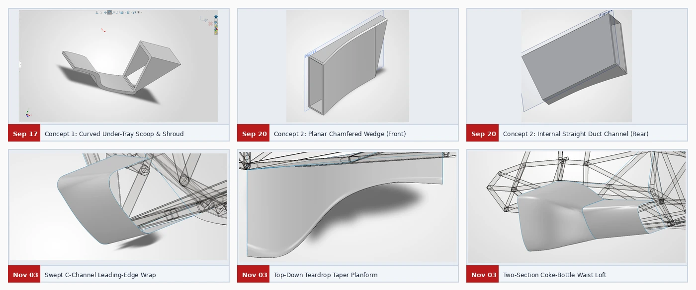
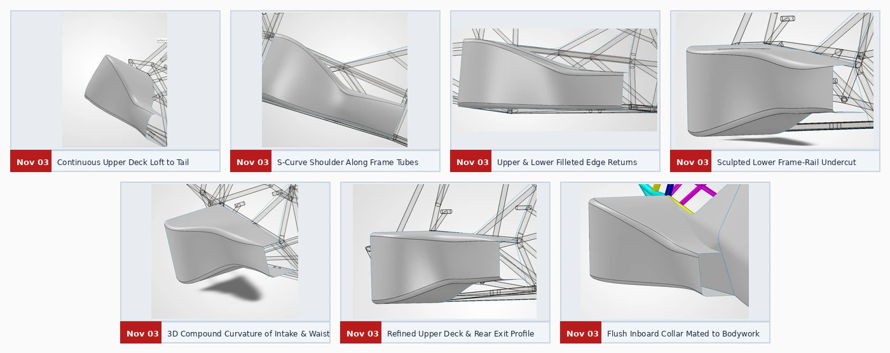

Case study 03 / Sep 17 – Nov 3, 2026
Sidepod
The sidepod evolved from a planar radiator duct into a contoured shell that wraps around the chassis and mates to the cockpit bodywork.
Development timeline
Sep 17 – Sep 20
Compare early ducts
An S-curved scoop fed a tapered radiator shroud. A chamfered wedge tested a straight internal channel and simpler construction.
Nov 3 · afternoon
Rebuild with surface lofts
A rounded C-channel inlet lip and swept teardrop planform replaced the planar wedge. A continuous loft joined the waist and formed the S-curve shoulder along the frame tubes.
Nov 3 · evening
Refine the chassis fit
Rounded edge returns, a sculpted lower undercut, a flatter rear exit, and a flush inboard collar completed the integration.
Design figures




Radiator airflow and cooling capacity are design objectives. The portfolio documents the sidepod geometry and packaging.
Next case study → CFD